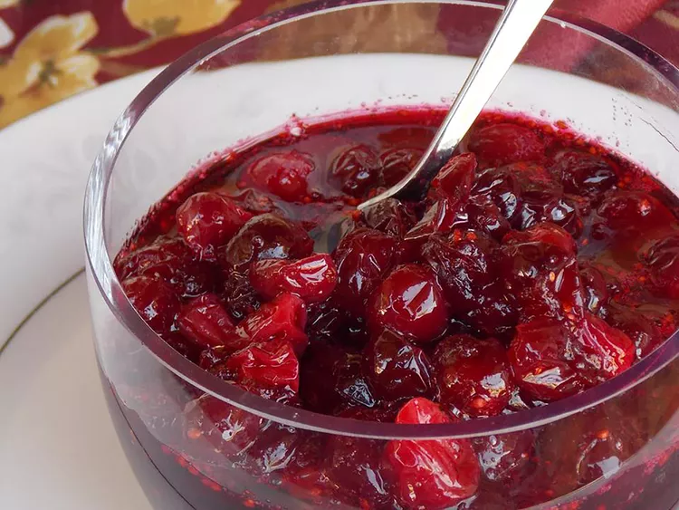

Cranberry-Sauce

Description
It couldn't be easier to make this fresh cranberry sauce with just three ingredients.
You'll find the full, step-by-step recipe below — but here's a brief overview of
what you can expect:
Bring the water to a boil, then stir in the sugar and cook until it is dissolved. Add
the cranberries and bring to a boil again. Reduce the heat and continue cooking
until the berries have popped and the sauce is chunky. Transfer the sauce to a serving
dish or jars to cool completely. Mix with a fork before serving.
Ingerients
- 1 Cup Water
- 1 cup white sugar
- 1 (12 ounce) package fresh cranberries (such as Ocean Spray)
Steps
- Gather all ingredients.
- Bring water to boil in a sauce pan,add sugar and cook until sugar is dissolved, about 5 min.
- Stir cranberries into the saucepan and bring to a boil. Reduce heat to low, and simmer until cranberries have popped and sauce is chunky, about 10 minutes or linger for desired consistency. The longer you cook it, the less chunky it will be.
- Pour sauce into a servubg dish or jars and cover until ready to use, the pectin in the cranberries will make the cranberry sauce gel as it cools.
- Mix cranberry sauce with a fork before serving.